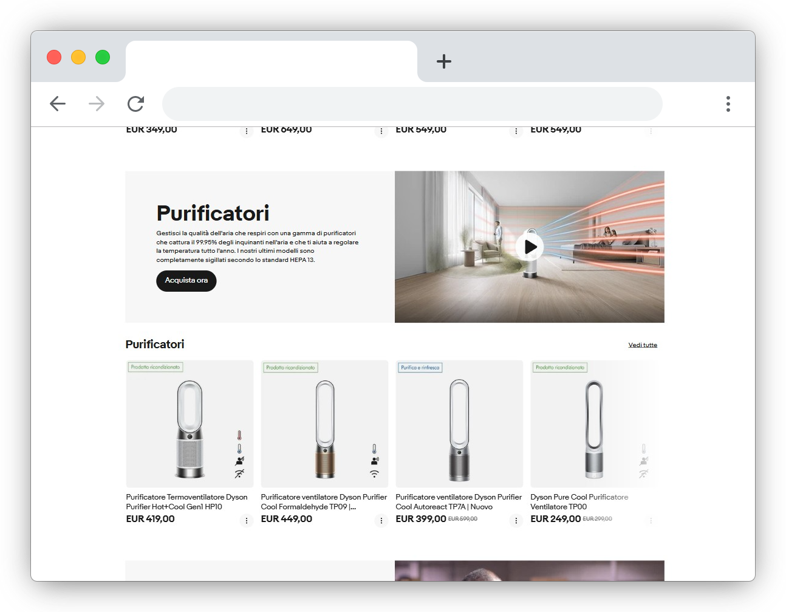

Template eBay
Professionali
Realizzo template eBay personalizzati per presentare prodotti, servizi e negozi online in modo più ordinato, curato e riconoscibile.

Cosa posso realizzare
Creo template eBay su misura per venditori, negozi e attività che vogliono migliorare la presentazione delle proprie inserzioni senza affidarsi a layout generici o poco curati.
Tecnologie e gestione
Un template eBay deve essere bello da vedere, ma anche pratico da usare. Per questo lavoro su una struttura semplice, ordinata e compatibile con l’ambiente della piattaforma.
Come viene costruito
Il template viene realizzato con HTML e CSS, rispettando le logiche di visualizzazione consentite da eBay. L’obiettivo è creare una scheda chiara, leggera e adatta alla presentazione dei prodotti.
Utilizzo e aggiornamenti
Il template può essere usato come base per più inserzioni, modificando testi, immagini e informazioni prodotto. Se nel tempo hai bisogno di cambiare sezioni, colori o impostazione grafica, posso intervenire con modifiche concordate in base al preventivo.
Cosa è incluso. Layout grafico personalizzato, struttura ordinata per le informazioni prodotto, sezioni per spedizione, pagamenti e assistenza, impostazione coerente con il brand e consegna del template pronto per essere utilizzato nelle inserzioni.
Alcuni esempi del mio lavoro
Una selezione di template eBay e layout per inserzioni creati per mostrare struttura, ordine visivo e possibilità grafiche.
NEXWAVE Audio
Esempio di scheda prodotto per un brand audio, con galleria immagini, informazioni tecniche, sezione spedizione e contatti. Un layout moderno pensato per valorizzare il prodotto.
Apri la demo ↗IRONPARTS
Esempio di store per ricambi auto, con categorie, sezioni in evidenza e blocchi promozionali. Il tono visivo richiama un settore tecnico, solido e industriale.
Apri la demo ↗